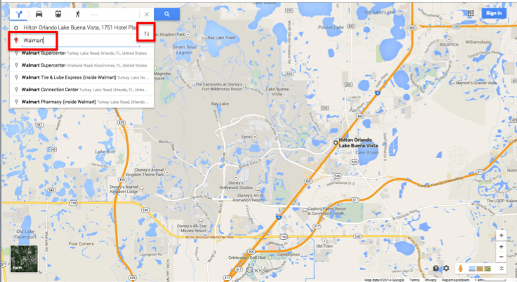
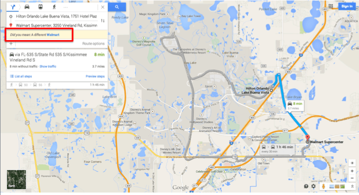
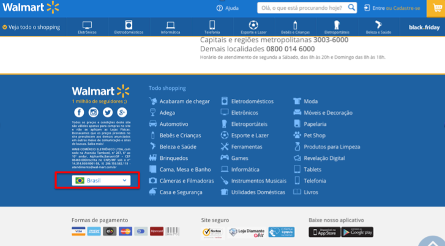
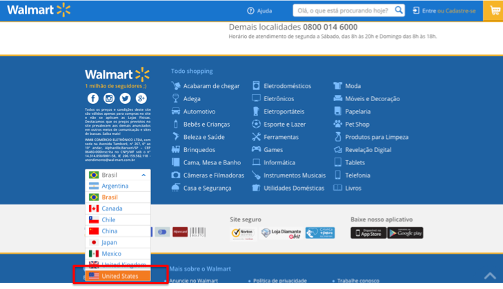
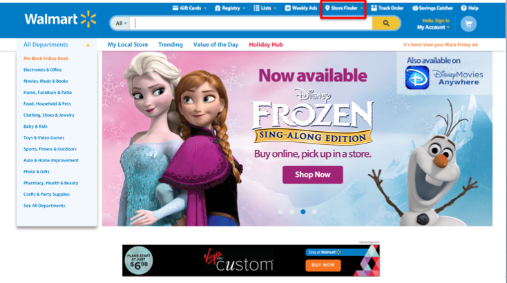
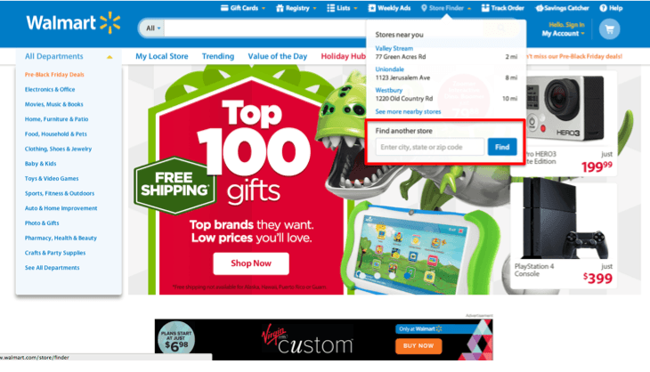
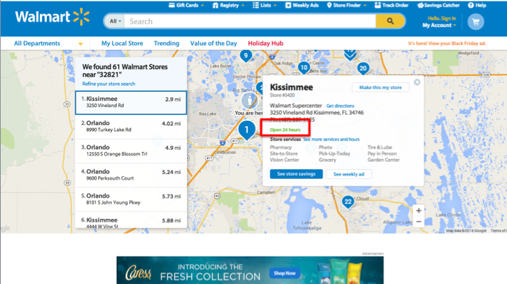

Lojas Recomendadas

Walmart em Orlando: dicas para as compras
Eu preciso confessar uma coisa: sou fã do Walmart dos EUA (que não tem nada a ver com o do Brasil). Sério. Quando a gente morava em Orlando e trabalhava na Disney, eu vivia ouvindo frases do tipo “Fui no Walmart, lembrei de você” ou “Estou indo no Walmart e resolvi te ligar pra ver se você quer ir também, você gosta tanto”. Você pode me julgar se quiser, mas sei que não estou sozinha nesse vício, pois eu não conheço um brasileiro que foi para Orlando e não visitou o Walmart pelo menos uma vez. Você conhece algum? Pois é, aposto que não.
Este supermercado é parada obrigatória dos brasileiros por uma série de motivos mas o principal mesmo é o preço baixo. A política de preço baixo todo dia é parte da filosofia do Walmart no mundo todo, mas é levada ainda mais a sério nos Estados Unidos. É aí que todos os brasileiros enlouquecem e com razão: se para os padrões brasileiros o preço normal dos americanos já é bem baixo, quando a gente tem a chance de comprar com preços baixos nos padrões americanos, para a gente é como se todo dia fosse uma Black Friday! É muito difícil se ater a lista de compras e não comprar mil outras coisas simplesmente por serem úteis e estarem BEM mais baratas que no Brasil. Já contei da vez que o Felipe entrou no Walmart para comprar uma mala e saiu com um móvel pra casa dele, né? Mas quando você acha um móvel por 29 dólares, é difícil dizer não.
Sendo bem honesta, o que mais desperta o meu interessa no Walmart não é nem só o preço, mas a grande variedade de produtos. O Walmart é o tipo de lugar onde a gente encontra as principais categorias de produtos que compõe a listinha de compras dos brasileiros, todos reunidos em um lugar só e com preços competitivos. É uma bela praticidade, principalmente para quem está em uma viagem mais corrida. Além disso, o supermercado tem produtos para agradar a família inteira. A minha família mesmo sempre se divide assim que chega no Walmart, e passamos algumas boas horas por lá, cada um no seu canto olhando os produtos de seu interesse. Se você quer comprar um Blu Ray, uma churrasqueira, uma lousa, um video game ou um Mickey de pelúcia, você encontra tudo isso por lá. É uma facilidade inegável. Se você tiver tempo de explorar as prateleiras de alimentos, vai ver alguns itens muito interessantes como chocolate quente e sopas que esquentam sozinhos, sem uso de energia elétrica ou fogo. Uma ótima idéia para quem quer levar sua própria comida para os parques (respeitando todas as regras claro, que você encontra aqui).
Como boa viciada no Walmart que sou, já chego em qualquer unidade de Orlando me sentindo em casa, sabendo onde encontrar o que eu procuro. Mas recentemente, observando o comportamento de alguns brasileiros na cidade e respondendo algumas dúvidas do blog, percebi que chegar no Walmart sem conhecê-lo pode ser um pouquinho atordoante, não acham? As lojas são sempre tão gigantes que as vezes você acaba vagando por lá sem saber o que vale ou não comprar. Além disso, percebi que muitas pessoas ainda têm dúvidas sobre qual Walmart visitar e como usar o site do Walmart para pesquisar. A idéia dessa matéria é conseguir ajudar a resolver todos estes problemas de forma que você se sinta mais à vontade e seguro para aproveitar o melhor deste maravilhoso supermercado.
Warmart Orlando: lojas e horário de funcionamento
Muita gente nos pergunta qual é o Walmart mais próximo do seu hotel ou qual o horário de funcionamento das lojas. Ou ainda, como acessar o site do Walmart americano para pesquisar sobre produtos, já que sempre somos redirecionados para a versão brasileira do site. As respostas para estas dúvidas todas são bem simples, veja só:
Para descobrir o Walmart mais próximo do seu hotel, basta você abrir o Google Maps (ferramenta incrível, melhor amiga do turista) e colocar o endereço do local onde você vai se hospedar ou simplesmente o nome do hotel. No exemplo abaixo, eu abri o Google Maps e procurei pelo hotel Hilton Lake Buena Vista. Assim que o Google Maps encontrar o seu hotel, faça ele traçar uma rota clicando em Itinerário/Directions (em destaque na imagem abaixo) até o Waltmart mais próximo, como você vê a seguir.
Primeiro busque pelo seu hotel. No exemplo eu só escrevi “Hilton Lake Buena Vista” e o Google Maps já encontrou o hotel. Em seguida, clique em directions ou itinerário para traçar a rota.
Veja que em geral o Google Maps vai entender que o seu hotel (que você indicou primeiro) é o local que você quer chegar e que você ainda vai colocar o endereço de origem. Como o que você quer é exatamente o contrário (ou seja, você quer ir do seu hotel até o Walmart e não o contrário) clique nas nas duas setas (uma pra cima e uma pra baixo) bem do lado da caixa de texto que ela vai inverter o local de destino e origem (conforme imagem abaixo). Depois disso, escreva “Walmart” como o seu local de destino. Não precisa especificar mais ada, basta escrever só Walmart e clicar no botão de pesquisar ignorando todas as sugestões que o Google vai te dar abaixo da caixa de texto, como no exemplo.

O Google vai te indicar o Walmart mais próximo e poderá perguntar se você quer ver outra unidade. Se quiser, basta clicar na caixa em destaque na imagem abaixo que você verá a lista de outras unidades da região, todos por ordem de distância do seu ponto inicial (o hotel que você colocou o endereço).

Fácil, né? E você pode repetir este processo para qualquer outro estabelecimento que deseje visitar.
Para entrar no site americano do Walmart e pesquisar produtos e preços, basta você digitar no google ou no seu navegador “walmart.com“. Se você for redirecionado para o site brasileiro, basta você rolar a página até o fim. No canto direito aparecerá uma opção para você mudar o país. Saia do Walmart Brasil e selecione Walmart USA. Prontinho, você será direcionado para a página do Walmart americano.


Agora que você já chegou no site americano, além de pesquisar produtos, você pode verificar o horário de funcionamento de uma loja específica. Para isso, basta escolher a opção “Store Finder” no menu superior no começo da página (em destaque na imagem abaixo)

Depois de clicar em Store Finder, você poderá procurar as lojas por cidade, estado ou CEP (que pode ser o do seu hotel). Mas você já saberá qual é a loja mais próxima porque verificou no Google Maps, né?  Assim que o site trouxer as lojas para a região que você definiu, você poderá ver mais detalhes de cada uma delas clicando no nome da loja. Entre os detalhes disponíveis, está o horário de funcionamento (no espaço destacado na segunda imagem abaixo).
Assim que o site trouxer as lojas para a região que você definiu, você poderá ver mais detalhes de cada uma delas clicando no nome da loja. Entre os detalhes disponíveis, está o horário de funcionamento (no espaço destacado na segunda imagem abaixo).
 
Dicas de compras no Walmart de Orlando:
É muito difícil definir quais são os melhores produtos para se comprar no Walmart de Orlando, pois vai depender muito dos seus hábitos e preferências nas compras. De qualquer forma, para ajudar a orientar nas compras, vou falar um pouquinho de cada departamento que eu costumo visitar e os destaques de cada um deles para te ajudar a olhar de forma mais crítica para as prateleiras todas.
Eletrônicos
Já falamos muito sobre a compra de eletrônicos em uma viagem aos EUA aqui no Vai Pra Disney (clique aqui se você ainda não leu o guia completo para a compra de eletrônicos em Orlando), e apesar do Walmart não ser o local onde as pessoas vão para compra-los, existe muita coisa com ótimos preços por lá. Você encontra televisores, tablets, videogames, laptops e até mesmo câmeras como a GoPro. O preço pode ser muito vantajoso e se você encontrar em outro lugar mais barato, basta levar o anúncio da outra loja ao passar no caixa que o desconto é concedido ali mesmo, sem burocracia.
DVD, Video Games e Blu Ray
Talvez esta seja uma das áreas que eu passo mais tempo no Walmart. Uma das coisas que eu mais gosto deste supermercado é a quantidade de DVDs baratinhos que eles vendem. Eu sei que DVDs já foram ultrapassos pelos Blu Rays, mas quando eu vejo um DVD de um filme super legal por 2 ou 3 dólares, não penso duas vezes antes de levar pra casa. Afinal, todo DVD funciona nos aparelhos de Blu Ray e a qualidade ainda é boa. Fica a dica: não deixe de verificar os filmes, mas lembre-se que a grande maioria deles estão disponíveis em inglês com dublagem/legendas apenas em espanhol. Você até encontra alguns títulos com legendas em português, mas são difíceis de encontrar. Para saber se o filme tem ou não a legenda em português, verifique os detalhes do mesmo na capa traseira do dvd.
Itens para a casa
Como já falamos na material sobre compras de itens de cozinha, o Walmart tem uma oferta de produtos bem interessante para o lar. Estou repetindo isso nessa material também porque os itens de casa do Walmart não se limitam apenas à cozinha. Lá você encontra desde roupas de cama, toalhas até velas aromáticas, quadros e o que mais você tiver coragem de colocar na sua mala. O Felipe já trouxe um abajur uma vez, quem sou eu pra julgar.
Quando eu morava em Orlando, comprei tudo para a minha casa ali, desde assadeira até cobertor. E eu amo tanto o cobertor que comprei lá que ele é o meu xodó até hoje. Outro bom item adquirido ali foi um abridor elétrico de vinhos. Enfim, se tiver interesse, vale a visita.
Cosméticos e Farmácia
Você provavelmente se assustaria com o tempo que eu passo na parte de farmácia do Walmart. Mas não é coisa de hipocondriaco não, eles tem alguns produtos que valem muito a pena você dar uma olhada. Primeiramente a quantidade de band-aids existentes nos EUA me impressionam muito e eu sempre trago um diferente pra cá: é band-aid com antibiótico, band-aid para bolha, band-aid para evitar que o sapato te dê bolhas, enfim, são muitos tipos. Além disso, para quem tem falta de alguma vitamina ou nutriente, você encontra uma série de capsulas de vitaminas interessantes por lá.
Alguns dos Band-Aids disponíveis nos EUA!
Outra coisa que as vezes eu compro é aqueles adesivos relaxantes musculares sabe? Depois de dias de parque, caminhando com mochila nas costas ou bolsa no ombro e dormindo numa cama que não é a sua, às vezes os seus músculos pedem este cuidado. É algo bem parecido com aquele Salompas mas você encontra alguns ainda mais potentes, viu?
Por fim, eu adoro os produtos em miniaturas e kits de viagem. Kits de primeiros socorros, kit de higiene e beleza com mini sabonete, mini escova, mini pasta de dente, mini tudo!
Já na parte de cosméticos, eu acabo comprando muito mais em outras lojas (como as que já citei na matéria de cosméticos em Orlando) mas vale dar uma olhada nos hidratantes, shampoos e cremes de cabelo que estão sendo vendidos aqui (como o famoso Aussie). O Felipe também gosta de dar uma olhada em produtos para barbear.
Vestuário
As roupas do Walmart são tão simples como são baratas. Eu não compro muita coisa lá não, mas se você quiser um moletom, uma camiseta básica ou qualquer produto bem neutro sem muita complicação, pode encontrar boas opções para atender a sua necessidade aqui. De vez em quando eu compro uns pacotes com meias também, ou uma calça de pijama. Vale dizer que é possível encontrar roupas com estampas da Disney, uma alternativa bem mais barata para uma lembrancinha do que as roupas compradas nas lojas oficiais dos parques.
Esportes
Se você é um entusiasta do esporte, fica o aviso: cuidado. Muita gente se empolga tanto com os preços de equipamentos esportivos do Walmart que acaba comprando muito mais do que precisa ou que consegue levar para o Brasil. E quando falo de itens esportivos, não estou falando só de futebol não, tá? Lá você encontra produtos para pesca esportiva, baseball,basquete e a grande maioria dos esportes que você imaginar. Vale dizer que os produtos lá são bem genéricos, bem mais voltado para amadores. Você encontra o que precisa para praticar a maioria dos esportes mas não espere achar camisas oficiais de times ou produtos de marcas especializadas. Para isso você precisará visitor outras lojas.
Malas
Talvez não exista um departamento exatamente de malas, mas este é um dos itens mais vendidos para brasileiros que visitam o Walmart, então vale a pena incluí-lo aqui. Sabe aquele momento no dia antes de voltar pro Brasil em que você realmente constata que comprou demais e não vai caber tudo na mala? É o momento em que você correr para o Walmart para comprar uma mala grande e baratinha.
Se você quiser uma mala mais duradoura e resistente, talvez outras lojas te atendam melhor, mas as malas do Walmart são um super quebra galho. São de pano em sua maioria e por isso digo que podem não agradar a todos, mas são baratas e grandes para resolver o problema de compras demais e mala de menos.
Jardim
Essa é uma área que quase ninguém presta atenção nos Walmarts, pois em grande parte das lojas essa seção fica em uma área externa. Ali você encontra desde produtos para jardinagem, como regadores, mangueiras, pás, sementes, mudas até mesmo decoração para jardins, como lanternas, poltronas, vasos e outras coisas que são difíceis de trazer para o Brasil. O meu pai já até comprou uma churrasqueira a gás nesse departamento do Walmart, só não conseguimos traze-la para o Brasil por conta do tamanho e de ma fé da empresa transportadora, mas isso é história pra contar em outra oportunidade.
Infantil
O Walmart tem um departamento de brinquedos e produtos infantis muito grande. Talvez não seja a loja onde você vai achar todos os itens do seu enxoval de bebê (estas lojas já listamos aqui), mas com certeza vai encontrar produtos para facilitar sua vida e principalmente brinquedos diversos para presentear uma criança querida.
Lembro de passer horas no Walmart de Orlando escolhendo Polly Pockets quando era pequena. Bons tempos…
A sacada aqui é que você encontra vários produtos trazendo personagens Disney por preços bem mais acessíveis do que nos parques, o que pode ser uma boa solução para a sua lista de lembrancinhas da viagem.
Mercearia
A parte de alimentos do Walmart vale a pena ser visitada mesmo se você não estiver planejando cozinhar durante a viagem. Tem sempre umas besteiras que eu gosto de trazer pro Brasil e mais alguns produtos que eu nem sabia que existia e experiment por pura curiosidade (é o caso do chocolate quente que esquenta sozinho por exemplo). Eu e o Felipe sempre compramos pipoca de microondas da Orville (que é bem mais gostosa que Yoki), massa de cookies Nestle Toll House, Oreo com recheio duplo, Pop Tarts e xarope de maple para comer com panquecas quando bater saudades dos EUA, entre outras porcarias que amamos com muito orgulho.
Se você pretende cozinhar durante o seu período em Orlando, minha dica é que não compre produtos frescos no Walmart, dê preferências por outros mercados para comprar frutas e carnes por exemplo. O Walmart é super barato e é ótimo para a aquisição de produtos industrializados (como a bolacha Oreo por exemplo) que serao iguais em qualquer lugar que você compre. Já produtos que exigem um cuidado especial na conservação, como carnes, vegetais, frutas e outros produtos frescos, eu sempre prefiro comprar no Publix ou no Whole Foods. Também não indico comprar nenhum prato pronto feito no Walmart (como frangos assados lá, carnes cozidas lá e etc). Para manter os custos e os preços tão baixos, com certeza nada disso foi conservado e preparado com o mesmo rigor de um Whole Foods por exemplo. Então mantenha o foco somente em produtos industrializados, heim?
Essa área de produtos frescos eu sempre prefiro evitar.
Outra dica ótima para quem está hospedado em hotel/casa com freezer é a prateleira de sorvetes. Gente, o Haagen Dazs é MUITO barato lá nos Estados Unidos e você encontra ainda mais sabores do que no Brasil. Além desse sorvete, amo muito o Ben & Jerrys que está chegando no Brasil agora, mas também é encontrado em bem mais variedade e com preços mais atrativos nas geladeiras dos mercados americanos.
Utilidade pública
Tem vários itens que ficam espalhados em outras categorias que eu não citei mas que merecem sua atenção na próxima visita ao Walmart e por isso vou lista-las agora.
- Plástico Bolha: excelente para embalar produtos delicados que você adquiriu na viagem e garantir que não vão quebrar no caminho para a casa.
- Label Maker: me chame de louca da organização (o que é engraçado, porque não sou! mas uma máquina de etiquetar as coisas é super útil).
- Lousinha: eu comprei uma lousinha para a minha cozinha e acho otimo, então queria deixar a dica aqui.
- Hand Warmer: se você vai visitar a Disney em dias frios, estes produtos baratinhos que são vendidos próximo ao caixa são sachês que esquentam sozinhos para você deixar no bolso e aquecer sua mão.
- Capa de chuva barata: se você deixar para comprar sua capa de chuva quando começar a chover na Disney, vai pagar pelo menos 5 vezes mais caro do que se comprar uma capinha no Walmart.
Cupons de desconto no Walmart de Orlando
No site americano do Walmart, você encontra alguns cupons que podem ser impressos para desconto nas lojas (clique aqui para ver o que há disponível atualmente). Vale sempre dar uma olhada no que estão oferecendo, mas em geral os cupons são válidos apenas para produtos de menor valor, como sabão em pó, alimentos, sabonetes e etc.
E você? O que você mais gosta de comprar quando visita o Walmart? Conte para a gente aqui. E espero que com esta material possa aproveitar ainda mais este supermercado.